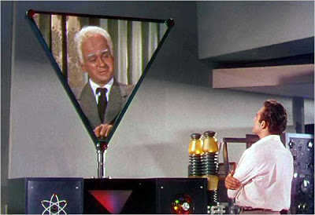
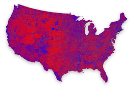

Live, from Metaluna, it's Crossfire! Dr. Cal Mecham consults with Metalunan emissary Exeter, living proof that Paul Begala (below, right) has sired extra-terrestrial offspring.Whenever I mischance to see Paul Begala reciting collectivist talking points on television, I'm struck by his resemblance to Exeter.
No, I'm not referring to the Royal Adviser from Henry V, most memorably brought to life by the beloved British stentor Brian Blessed.* I'm referring to the mysterious visitor from the planet Metaluna in the 1955 sci-fi classic This Island Earth. The resemblance, however, is limited to unfortunate coincidences of physiognomy.

Begala is a creature of the entrenched collectivist elite -- a Clinton-era courtier-turned-talking head. Whatever his gig, whether in government "service" or as a member of government-centric asteroid belt of official sycophants called the "Washington Press Corps," Begala invariably extols the supposed virtues of the State and its lethal works -- regulation, regimentation, coercion, wealth redistribution, and the like.
He is a perfectly suitable representative of the "new unhappy lords" described by Chesterton, who examine the rest of us through "bright dead alien eyes.... They look at our labor and laughter as a tired man looks at flies." Those "new unhappy lords," Chesterton explained, have delegated the hard work of coercion and extraction to others; they "fight by shuffling papers" and "dare not carry their swords."
In this respect they're a bit like the advanced but effete Metalunans, who formed a supervisory "cognitive elite" that delegated the grunt work to fearsome mutants. With their own planet under terminal assault, the Metalunans secretly plot to dispossess humanity. They have developed the means to deprive human beings of their free will via mind-transference technology -- which operated on the same principle as "Hannitization," I suppose.
Once again, the resemblances between that pulp-inspired fictional race and our ruling class are remarkable. There is one important sense in which Exeter differs from Begala, however: When the time came to carry out the subjugation of mankind, Exeter rebelled, eventually rescuing the heroes (Dr. Mecham and his inamorata, Dr. Ruth Adams) and sacrificing his own life to thwart the invasion.

By way of contrast, Begala -- on the evidence available to us thus far -- will never repudiate his loyalty to the parasite class he has served so dutifully for so long. During last week's tax protests, Begala made himself prominent in the chorus hymning the praises of the redistributionist state, while execrating those who believe that they should be permitted to keep what they earn.
In fact, Begala's essay was a remarkably pure expression of the view that the people of the United State (that is not a misspelling) are valuable only insofar as their persons and property are placed at that state's disposal.
April 15, smarmed Begala, is "the one day a year our country asks something of us --or at least, the vast majority of us." For the superior beings in government-issued costumes or government-provided sinecures who "serve" us, he continues, "every day is patriot's day.... But for [sic] the rest of us, the civilian majority, the government asks very little. Except for April 15."
Here Begala is peddling his proprietary mixture of ignorance and dishonesty by insisting that the government ruling us extracts taxes only on April 15, as opposed to mulcting most of us with every purchase and every paycheck. And he ignores outright the incessant theft of the value of our earnings by way of inflation.
Through inflation -- the deliberate, malevolent debasement of the currency -- Government (the term in this instance includes the quasi-governmental entity called the Federal Reserve System) has made itself the only entity capable of stealing from us while we sleep without physically taking possession of a single thing. Inflation is immaculate pilferage, the defining crime of a system of official monetary fraud that was conceived in hell, gestated in the womb of the banker's cartel, and born as the squalid twin of the income tax system Begala considers the holiest of all public functions.
Begala, like so many others of his despicable sort, insists that the terms "government" and "country" are synonymous; thus when he writes that "patriotism means putting your country ahead of yourself," what he is really saying is that the trait he mis-labels "patriotism" consists of "enduring with lobotomized tranquility whatever indignity or oppression the Holy State sees fit to inflict upon you, and displaying pathetic, servile gratitude that the State permits you to keep any of what you're honestly earned."
Like collectivists of all varieties, Begala also maintains that "selfishness" consists of trying to protect one's own property, rather than coveting the earnings and property of others. From that perspective, one becomes a "thief" by keeping, rather than taking. Remember that principle well; we'll come back to it anon.
This year Tax Day came shortly after Resurrection Sunday. On Easter, Christians celebrate the promise of ultimate freedom through the triumph of the ultimate Life-Giver. Tax Day, by way of contrast, is dominated by the ultimate life-stealer - - the state.
Each of us invests a portion of our most perishable possession – time – to earn money. Thus every forcible imposition on our earnings, through direct taxation, or its more subtle surrogate, inflation, represents an increment of life stolen by the state.
This isn’t true of free transactions, or the voluntary donation of wealth through charity. What the state ruling us takes, it steals at gunpoint. And what it steals from us it uses to blight the lives of others – either through domestic tyranny or military aggression abroad.
Through taxation, therefore, the State manages to steal life incrementally, rather than destroying it outright. And for this singular labor, the heralds and high priests of the State admonish us to be abjectly grateful.
As a result of last week's "tea parties" -- most of them little more than entertaining distractions for people associated with the Republican variety of totalitarian statism -- there was a great outpouring of indignation from the Obama-centered left over what was described as the "treasonous" discontent exhibited by protesters.
Much of that commentary was broadcast via Democrat-friendly talk radio (which remains a niche market at present), and it tended to dwell on what we were to consider a significant contrast between the anti-tax discontent of the 1770s, and the supposedly adolescent "tantrums" that took place last week: You see, the patriots of the founding generation protested taxation without representation, while last week's events were carried out by people who lost a democratic election. They have representation, but the other side has the power. So there! Just shut up and submit!
That analysis, ironically enough, is based on a correct understanding of the purpose of the voting franchise in a mass democracy: It is the process through which one faction, working in collaboration with the state, obtains the "legitimate authority" to decide how to dispose of the lives and property of others. When refined to its purest and most malignant form, democracy not only allows for the subjugation of an out-of-power minority, it makes the liquidation of that minority a realistic possibility.


This brings us back to Paul Begala, our doliocephalic exemplar of the parasite class. As I've pointed out before, back during the sudden death overtime of the 2000 election, when the "Red State"/"Blue State" dichotomy was fresh in people's minds, Begala wrote another remarkable essay denigrating those he deemed to be politically retrograde. In that case, he wasn't discussing their resentment over taxes; he was treating them as a seething, undifferentiated mass of uncivilized bigots who not only weren't capable of self-government, but didn't deserve it.
Whenever a paragon of progressive "tolerance" expresses such a view of "Red State" America, I find myself wondering why people of that persuasion want to share a country with the people they despise. If the "other side" consists of nothing but incorrigible bigots, why risk sharing political power with them at all? Why not secede, or encourage the other side to do so?
"I feel pretty, oh so pretty!" Artfully coiffed Texas Governor Rick Perry, whose entire political career is an extended act of Estabishment hackery, serenades a crowd.

Oh, but the very mention of the possibility of secession is criminal, at least as perceived by those of a "progressive" mind-set. During one "tea party" event, Texas Governor Rick Perry -- a Just For Men (tm) model chosen by George W. Bush as his successor; an establishment rent-seeker with no detectable ideological ballast -- publicly acknowledged the possibility that Texas could someday secede from the United State.
This led progressives, their faces empurpled with patriotic rage, to accuse Perry of "treason." And it prompted David Brock's Media Matters organization -- dutifully recycling material assembled by the aspiring commissars at the Southern Poverty Law Center -- to put into circulation a cut-and-paste "links and ties" screed connecting Perry to all kinds of unsavory people who at one time or another supported the idea of an independent Texas.
"During WWII my father was shot in defense of the greatest country on earth and I proudly wore the uniform of a United States Army Reserve officer," fulminated liberal blogger John Amato. "So I'm offended when it become [sic] acceptable for anybody to talk about Texas leaving the Union."
Mr. Amato's delicate sensibilities aside, he and people of his persuasion miss a very important point: Texas doesn't belong to them. Neither do Texans. Neither do any of the other "Red States" or their inhabitants. However, there is a tacit yet unmistakable proprietary undercurrent whenever people of that persuasion discuss the concept of secession.
How would peaceful, orderly secession -- the reclaiming of independence by a state or, in the case of Texas -- be "treason" against "the united States in Congress assembled"? By strict constitutional definition, "treason" consists only of "levying war against them" or in "adhering to their enemies, giving them aid and comfort." (Emphasis added.)
Note how this passage refers to "states" in the plural, not to a singular national government. Interestingly, there is no language in the U.S. Constitution that makes "rebellion" against the general (or federal) government a form of treason. And since the federal government was designed to be an agent of the states, a state that chooses to withdraw from that relationship is hardly a "rebel."
Furthermore, secession is not an act of war, since withdrawing from a social arrangement of any kind is exactly the opposite of aggression. But to understand how collectivists perceive the matter, we have to revisit a principle mention earlier -- namely, the idea that someone who resists surrendering his property through taxation is a "thief."
In similar fashion, supporters of the unitary state that rules us insist that the act of revoking one's consent to be ruled by that state is "aggression," and the use of force to prevent an act of peaceful withdrawal by a state would be "defensive" in nature.
"The final argument of kingly authority."

This is why every conversation about the prospect of secession always leads such people to insist that the matter was "settled" by the so-called Civil War -- which is to say that logic was compelled to surrender before the ultima ratio regis. And this amounts to yet another key tacit admission: The United State(s), like any other leviathan polity, is held together by the implicit terror of the central government.
As the southern states seceded from the Union, Abraham Lincoln famously fretted, "What, then, will become of my tariff?" Collectivists who despise the inhabitants of the Red States yet abominate the prospect of secession might well be entertaining similar thoughts: "If those living in the Red States leave, how will we tax them? How will we re-engineer their retrograde beliefs, regiment their workplaces, and regulate their repulsively individualistic lifestyles?"
Blue State progressives can find consolation in the fact that most Red States appear to be just as collectivist are they are. In fact, by some measures Red States tend to be net tax consumers, rather than net tax payers. At least some of this reflects the cultivated dependency of southern states on the warfare element of the welfare/warfare state.
Christopher Wesley of the Mises Institute takes note of an irony lost on Blue State critics of secession: "[T]he blue-tax paying states could secede, maintain all federal spending commitments in their states, and have money left over, while their red counterparts would pay a higher economic price for pursuing a similar course—at least in the short run."
This would appear to offer a compelling case for left-collectivists to support secession, would it not? But buried even deeper in this alignment is another critical fact: There are no "Blue" states, only blue cities. The rural and much of the suburban population in both "Blue" and "Red" states consists of net payers of taxes; what Steven Malanga of the Mahattan Institute properly calls the "tax eater sector" is overwhelmingly an urban phenomenon (and former "community organizer" Barack Obama is a pure product of the urban tax parasite constitutency Malanga describes).
What this means, of course, is that the schism between urban tax-eaters and rural/suburban tax victims will grow steadily wider until something -- either the present political/economic system, or the people ruled by it -- collapses altogether.
With the government now little more than a full-service plundering arm of Wall Street, now is the best time for states to withdraw from the corporatist unitary state and repudiate its system of taxation, fiat money, inflation, and debt.
Unfortunately, if there is one thing that both Red State national socialists and Blue State socialist nationalists enjoy more than hating and baiting each other, it's nurturing the prospect of ruling the other side -- and this simply can't be done if the "other side" is permitted the option of exercising the right to peaceful secession .
So the exercise in mutual self-oppression continues, and the "New Unhappy Lords" ruling from behind the scenes continue to make us poorer and less free.
_
*Or, as the name is properly spelled, BRIAN BLESSED!

On sale now.
Dum spiro, pugno!
23 comments:
You sure do have a penchant for comparing collectivist pundits to characters featured on TV shows from antiquity.
That's because it's all showbiz!
Actually, that's truer than one might immediately realize. Looking at all of politics as some TV show in its sixth season is surprisingly productive. Think about it: all the old guard neo-cons (and other characters who have overstayed their welcome and become dead weight) have been written off the show: Cheney, Rumsfeld, Bush etc, and now Obama and his sycophants and handlers have taken center stage as the main protagonists.
But wait! Just as this happens, some more characters are being introduced who will serve as future opposition to our new stars! Namely Bobby Jindal--everyone woke up one morning and was being told in unison that, apparently, for some reason, this guy is the Republicans' new golden boy, who will spearhead their suddenly anti-establishment efforts and catapult them back to their glorious former position of dominance!
To use one of my favorite Griggisms, this development is as predictable as the "plot" of a porno film: the old party, having lost favor, installs a new figurehead and adopts an anti-establishment stance in order to win popularity. Like Californians preparing to act surprised when their houses get burned to the ground in next year's wildfires, the cycle has begun anew!
And I have to say: I might not have read all of your writings yet, but this newest essay sure is the finest I've yet read.
BRIAN BLESSEDBless you! (And your family!)
hello... hapi blogging... have a nice day! just visiting here....
Yes, yes, and yes to Anon., too. It's all show biz, especially the slogans and bywords to which we're subjected over and over. Brilliant essay--thank you for it.
[E]veryone woke up one morning and was being told in unison that, apparently, for some reason, [Bobby Jindal] is the Republicans' new golden boy...A political hack from (arguably) the most corrupt state in the Union as the Gang Of Plunderers' "golden boy?" It would make perfect sense. It's certainly in complete keeping with the Grotesquely Obtuse Party's track record for putting front and center the dregs of the political barrel and then wondering why they've become the nation's political laughingstock (can we say "Bob Dole" and "George W. Bush?").
I guess that by this point it has become apparent to the "leadership" of both factions of the Central Party that there is no longer any need to even maintain appearances. Since it's been proven conclusively by the election (twice) of the Bushtard and more recently of the Obamunist that you can indeed fool ALL of the people ALL of the time, why even pretend to stand on principle or embrace honesty?
Lobotomized tranquility. Join us; it's bliss.
I followed the begala link and was blown away by the bottom line: that "Patriotism is putting your country ahead of yourself".
This is the ultimate summary of the collectivist. This is the view that you owe to a metaphysical nonentity a duty to exchange what is most beneficial to you for that which benefits another.
Isn't this also another way of saying familial fidelity is putting your family ahead of yourself?
Isn't this another way of saying fidelity to your faith is putting the faith ahead of yourself?
Isn't fidelity to blank putting blank ahead of yourself?
mongol Doc Ellis 124
This is a must read for anyone interested in the the current political dynamic. It's also a good opportunity for me to plug The League of the South.
In any case, Mr. Grigg's analysis of democracy is spot-on. Democracy is not and cannot be a permanent governmental structure. Rather, democracy is a transitional regime that is necessary for enabling legitimizing the rancid actions of demagogic tyrants.
As a side note, I'm curious about something. Does anyone else recall when the blue states were associated with Republicans and the red states were, rather appropriately, associated with Democrats? Not that it really matters when the game, as it stands now, is Three-card Monte.
Derek at 741:
"As a side note, I'm curious about something. Does anyone else recall when the blue states were associated with Republicans and the red states were, rather appropriately, associated with Democrats?"
I think the term red became Republican right about the time that Ronald Reagan, a Democrat flying Republican colors, was inflicted into the White House.
mongol Doc Ellis 124
Will, it was good to read on Lew Rockwell's blog tonight that you were listed as a favorite of blogger Alex Winston in his interview with The Pakistani Spectator at:
http://www.pakspectator.com/interview-with-blogger-alex-winston/
Winston also stated that "Will Grigg is stunningly correct in his view of justice."
Just think, if the JBS had continued your blog on their site, they could have capitalized on this good free publicity. Once again, the JBS comes up short. Congratulations on this well-deserved recognition of your superb blog and stellar character!
Regarding your current blog, thanks for making it abundantly clear that Rick Perry's talk about secession is just that - nothing but talk, unfortunately. It may end up getting him re-elected, though, and was a smart political move on his part, but the last thing Texas needs is having Perry for yet another term.
Your writing is superb! Always entertaining and enlightening. However, I find myself struggling to not feel an overwhelming despair as we ride an express elevator to national socialist hell and eveyone is cheering as we go. What are we gonna do? Do you ever feel like you're preaching to the converted? The despair is such that I am looking at becoming an expat just to get away from this place before it turns into a true Orwellian paradise...
My grandfather was a doctor in WW2, Mr. Amato, but I would not suggest you let me do surgery on you, no matter what uniform I should choose to wear.
----------------
Splendid blog, here, with Constitutionality AND 50's Sci Fi pop-culture references for the win!
Oh, and BRIAN BLESSED.
I tire quickly of this seemingly perpetual "love-hate" snafu that is modern political sensibilities in this country.
On the one hand, you often have partisans (of either side) exclaiming about how stupid and disgusting the Redstaters/Bluestaters are, and how much they wish they didn't have to share a country with them. Five minutes later, the hated "them" in question suggests leaving "us" alone and these people are up in arms about what a treasonous suggestion this is. Along with that are the constant declarations that THEY know what "the real America" is or isn't, and the people the so disgust them are part of some obviously backwards, out-of-touch minority.
My god... a nation of busybodies, a nation of out-of-touch minorities. I can't wait for everyone to get over this silly myth that America is some unified, middle-class place full of similar "average Joes." Maybe when people accept that this is a land diverse, always has been, always will be (yes, yes, I know, they annoyingly pay lip service to this idea, too!), it won't be so incredibly "offensive" to them to suggest that maybe we need NOT all be held together in political unity at the point of a gun.
This country is practicing social polygamy and needs a number of political divorces.
The only time I've seen "This Island Earth" was the Mystery Science Theater 3000 version. I find most movies to be much more entertaining that way. Come to think of it, maybe Mike Nelson and the rest of the MST3K crew should do voice-overs of the speeches of politicians and other government functionaries, who richly deserve ridicule. To paraphrase Mike Nelson: "Some people have it coming!"
Doc Ellis,
You said: "I think the term red became Republican right about the time that Ronald Reagan, a Democrat flying Republican colors, was inflicted into the White House."
Exactly so. Reagan was a Statist claiming to be a Republican. How he got away with it was because the State handouts were for big business, not us peasants. Just too as the Neocons were the worst Statists of the breed, riding the Republican machine to power, and destroying it in the process. Even so, if the Neocons had been working for the betterment of the USA, they might have done less damage. Instead, they were working for Israel and the Power Elite.
Allen Owen, you said: "[I] feel an overwhelming despair as we ride an express elevator to national socialist hell."
You have your terms wrong. Nazism (Hitler's National Socialism) and Fascism (Benito Mussolini's regime, whose emblem was the Roman Fasces) are the repressive alliance of the State with Big Business. Personal freedom and free speech are brutally repressed and the Party controls everything. THAT is the eight years we have just escaped from under Bush, and we are ALREADY in the resulting Nazi hell.
Where we ARE supposedly headed, which is certified by a vast concourse of bearded Nostradamuses and beardless diviners of tea leaves, (this after Obama has spent only 3 months on the job to date,) is to COMMUNIST hell. They assure us we have just exchanged Adolf Hitler for Josef Stalin.
What makes me skeptical is that Stalin also crushed personal liberty and free speech, and tortured and murdered with abandon. I do NOT see Obama moving in this direction, unlike Bush, who was the mental acolyte of all three dictators.
I am certainly glad my numerous employers over the years did not present me with the same horrendous problems Obama has inherited, and ask me to clean them all up in 3 months. The American public is again being bamboozled by the Republlican spin machine, baying like a pack of hounds from the deepest pits of their own personal Hell.
Everyone seems to forget that it was BUSH that signed the first $700 billion Banker Bailout Bill, back in late 2008. Unfortunately, Obama seems to be just as much in thrall to the Power Elite as Bush was, and is continuing the vast dole of taxpayer money to the obscenely rich and whining classes. (Notice, if you will, the black single mother in a Detroit tenement was labeled a 'welfare queen,' while the billionaire bankers in their Learjets are labeled 'unfortunate businessmen who made bad choices.')
I suppose in the human lottery, every one who is white and rich with flawless skin and teeth and whose daddy went to Yale and lives in Connecticut is worth many thousands of black, pockmarked, poor, diseased, mothers in tenements. Doesn't the Bible tell us so?
While I am willing to give Obama more time to do his job, I do agree he has made a bad start. It is way past time that the entire fiat money system, all the banks and the Federal Reserve, all exploitative businesses and the entire power elite, should be allowed to go bankrupt and plunge the world into utter chaos and a new revolution. I would like to see the lampposts of Washington adorned with severed heads, starving mobs with machetes and carving knives roaming the streets, and the chateaux of the CEOs and CFOs going up in flames, with the occupants still inside.
However I do not see this ever happening, or, not just yet anyway. I believe the situation will go from bad to worse. There will be an illusive recovery in commodity prices, as the trillions of newly printed dollars flow upwards into the pockets of the speculator class, which will do nothing to help the unemployed debtor classes. We the debtors will instead be squeezed even more than we are now by skyrocketing inflation, and the next economic crash will make this one look like a kindergarten easter egg hunt.
The human race has lost its soul. No politician anywhere in the world ever runs for office on the concept of restoring dignity, fellowship, honor, morality, charity, and humanity to the electorate. Instead they run on the idea that they will make everybody filthy rich. I do not think this pursuit of money has been very satisfying to the souls of humanity. The hungry natives of the Third World are often happier in themselves than the millionaires of the First World.
It is time to expose the fiat money system and the pursuit of imaginary wealth for what it is - the nightmare of the leeches and maggots of the human race, into which they have sucked everyone else.
Please - go eat your favorite food and ask yourself if you would trade your sense of taste and smell for a million dollars. If you have a child, go kiss it now and ask yourself if you would sell him or her for ten million dollars. Go look at a sunset and ask yourself if you would sell your eyesight for a billion dollars. Go sit next to a dying multibillionaire and ask how many dollars he is taking with him to bribe God with when he stands before God's throne to be judged.
Money is not everything.
The human society of the world is sick. It throws away priceless pearls of the spirit, and scavenges Satan's dumpster for material trash. It is time, long past time, this rotten system was allowed to fail and be exposed for the sham it is.
THAT is why I disagree with what Obama is doing. But never mind, the laws of mathematics, the laws of finance and the laws of God will not fail, and we will ALL suffer for our foolishness.
Lemuel Gulliver.
Lemuel Gulliver said:
"The human society of the world is sick. It throws away priceless pearls of the spirit, and scavenges Satan's dumpster for material trash. It is time, long past time, this rotten system was allowed to fail and be exposed for the sham it is.
THAT is why I disagree with what Obama is doing. But never mind, the laws of mathematics, the laws of finance and the laws of God will not fail, and we will ALL suffer for our foolishness."
All I can add is a brief "Well stated!"
Hey all, go vote for Will to be a guest on Judge Napolitano's Freedom Watch show. Go here: http://freedomwatch.uservoice.com/pages/freedom_watch_guest_suggestions?filter=top&page=3
Saying that April 15 is the only day that government harvests the fruits of our effort is the most idiotic and outrageous lie ever. Federal and state taxes, the hidden but substantial costs of regulation, trade protection and numerous subsidies jack up the costs of almost everything that we need to survive. I suggest reading THE TAX RACKET A to Z. Needless to say, the taxes extracted by government are rarely spent where they are supposed to be spent either. Gasoline and tobacco taxes (now 50% of the purchase price of the processed leaf) are good examples but I won't elaborate. Cane sugar costs consumers and businesses twice what it would without the trade protection and monetary subsidies given to a few millionaire growers. Isn't it sickening how collectivist compulsive liars and COMPLETE MORONS like that are always treated like guest geniuses by the MSM?
Will, I don't know if this fits here or not:
Today's CyberJoke 3000™
It's been a big year for my ten-year-old. Three months ago she made her first confession. It took the cops four hours to break her!
If this does not fit here, maybe you can use it on another comment thread.
mongol Doc Ellis 124
Marc 1248
"I suggest reading THE TAX RACKET A to Z."
"Tax Scam",by Alan Stang is another good book to read.
mongol Doc Ellis 124
Dear Friends:
Ahh, April 15th......Springtime!! Cherry blossoms!! Baby lambs!! Bluebirds!! Sunshine!!
.....The season when the leeches emerge from their winter slumber in the pond scum, thirsty for living blood. The season when all the bleating sheep are gathered to be shorn. The season when hungry ticks prepare to fasten their teeth into unsuspecting flesh. The season when rapacious snakes emerge looking for warm little mice to sink their fangs into. The season when caterpillars turn hopeful green shoots into dead wood. The season when blowflies prepare to send forth their maggots to feed on flesh that has lost the fight for life.
The season when the IRS emerges from their coffins of native soil to suck thirstily at the necks of We The People and turn us into The Undead.
Yours in desanguination,
Lemuel Gulliver.
Post a Comment